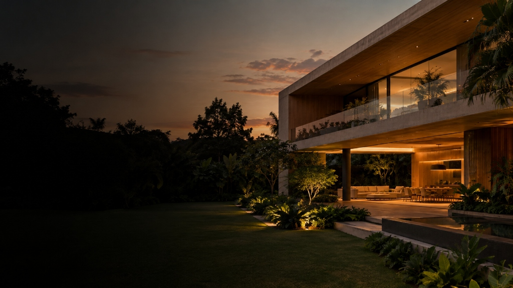

Imóveis que expressam quem você é, onde cada detalhe foi escolhido com intenção.
Conhecer a ÁticasQuem somos
A Áticas nasceu da crença de que um imóvel vai além de quatro paredes. É o lugar onde a arquitetura encontra o cotidiano, onde a luz entra com propósito e cada ambiente revela uma intenção.
Atuamos na curadoria de residências de alto padrão — casas, coberturas e apartamentos que se distinguem pela qualidade construtiva, pelo entorno privilegiado e pela atenção ao detalhe que transforma um imóvel em lar.
Nossa abordagem é consultiva e discreta. Entendemos o que você busca antes de apresentar qualquer opção.
Fotografia arquitetônica
Texturas naturais
Luz natural

ArquiteturaPróximo passo
Cada busca começa por uma conversa.
Entre em contato e apresente o que procura.
Contato disponível em breve.